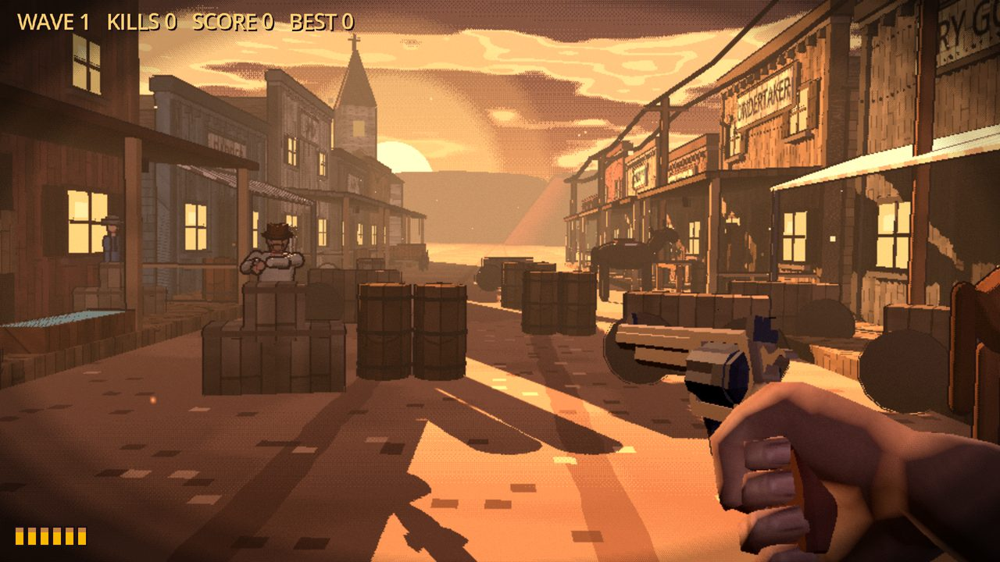
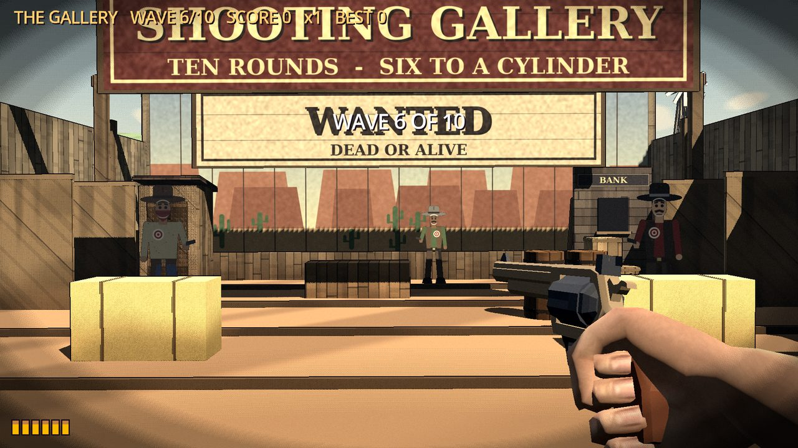

A first-person western duel. Watch his eyes through the count, draw on the bell, and put him down before he does the same to you. There is no crosshair: you shoot from the hip along the barrel or raise the iron sights. Only the head or the heart kills outright.

Both of you download the game for your system and unzip it. One of you opens the door in your room, picks DUEL A FRIEND, then HOST GAME, and chooses where to fight. A four letter room code appears. The other picks DUEL A FRIEND, then JOIN GAME, types their name and the code, and joins. Both press READY. After each round you both ready up again and pick how you move.
Five stages against harder and harder men: the town, the Holliday tree, the midnight river, the mesa valley and the high meadow. Hold the Line, endless waves of outlaws from behind cover. And the shooting gallery out back: ten waves of painted outlaws on rails, popping up and dropping down, with tin bonus plates for a bigger multiplier.

Windows: unzip and run Westurn.exe. Windows may warn that the app is unrecognised; choose More info, then Run anyway. Linux: unzip, then run Westurn.x86_64. The browser version needs no download.